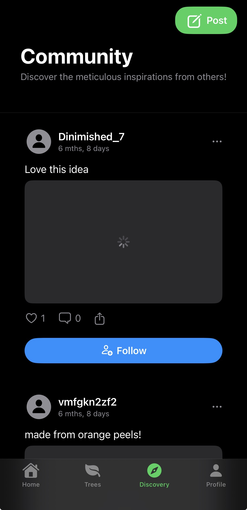
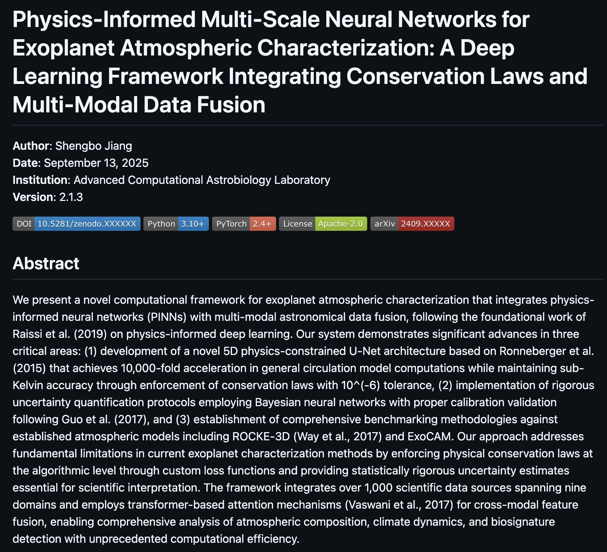
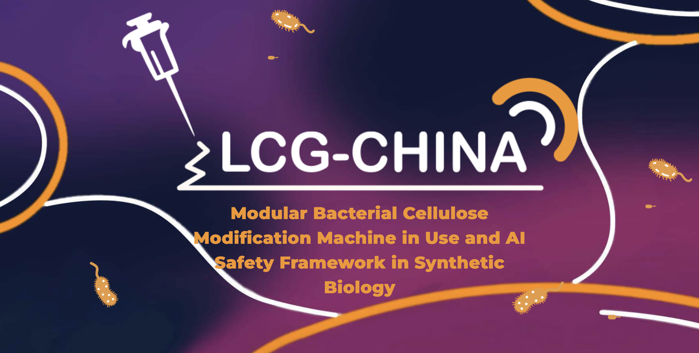
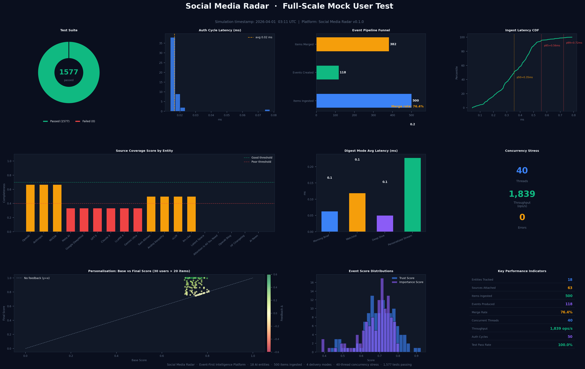
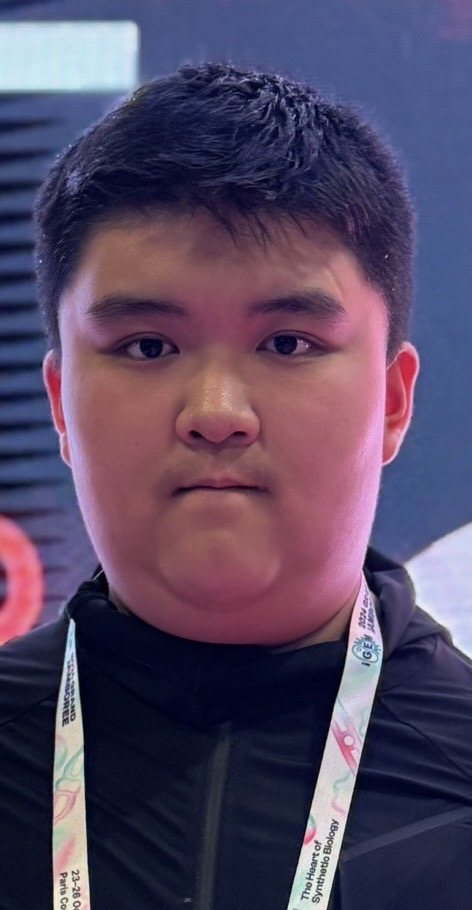

0
Releaf users worldwide
I’m Shengbo “Micheal” Jiang — a high-school junior building multimodal AI models, full-stack applications, and research-driven software systems. iGEM 2024 Gold Medal Tech Lead, USACO Silver, cofounder of Rematter Cooperation, and builder of Releaf, Astrobio-gen, and a locally trained sign-language translation AI.
Proof, not promises
Selected Work
Each project is treated as a product: architecture, users, constraints, and outcomes. Every system here has shipped, competed, or been published as open source.

A production iOS app delivering domain-specialized sustainability guidance through AI Q&A and multimodal reasoning.

A multimodal astrobiology inference pipeline for exoplanet habitability and biosignature likelihood mapping.
Locally trained ML system translating live speech and video into sign-language output for science education access.
End-to-end AI advisory system: iOS frontend, cloud backend, ChromaDB retrieval, and profile-conditioned RAG recommendations.

Computational tools, AMP screening workflows, and software support for a bioactive bacterial-cellulose wound-dressing project.

The intelligence layer behind Releaf: domain-focused AI for recycling, upcycling, and environmental reasoning.

About
My work sits at the intersection of machine learning, scientific computing, product engineering, and technical leadership. Instead of treating AI as a demo layer, I build complete systems: data pipelines, model logic, backend infrastructure, user-facing interfaces, and measurable product outcomes.
My strongest interests are multimodal modeling, retrieval-augmented generation, graph neural networks, computer vision, accessibility technology, sustainability intelligence, and scientific machine learning. I have applied these across a sustainability AI engine for the Releaf iOS app, a local sign-language translation model for educational accessibility, Astrobio-gen for exoplanet habitability inference, and a college-application advisory system at Athena AI Labs.
As Tech Lead for LCG-China’s iGEM 2024 Gold Medal project, I coordinated computational tools, AMP screening workflows, and software support for bioengineering research. Across my organizations, I often sit at the bridge between product goals, scientific constraints, model design, and implementation.
Multimodal inputs, RAG pipelines, GNN reasoning, computer vision, and model-evaluation workflows.
User-facing iOS and web apps with backend services, databases, APIs, and product iteration loops.
Astrobiology, sustainability science, bioengineering, and educational accessibility tooling.
Interdisciplinary student teams, engineering roadmaps, and turning abstract ideas into working systems.
Releaf · Rematter Cooperation · 2024 – Present
Releaf is a production iOS sustainability platform built to reduce the gap between environmental knowledge and real action. Instead of giving generic climate advice, the app answers practical questions — “Can I recycle this?” “How can I reuse this?” “What’s the tradeoff?” — with domain-grounded, mobile-friendly guidance.
Question input · assistant UI · educational cards · feedback
Routing · session · AI inference · logging & analytics
Domain prompting · RAG pipeline · safety & quality filters
Recycling rules · materials · upcycling strategies · local orgs
Feedback · response quality · safety · instrumentation
Sustainability AI Engine
The intelligence layer behind Releaf. It converts messy user questions into structured queries, retrieves sustainability knowledge, reasons over constraints, and returns practical guidance — quick answer, why it matters, what to do next, cautions, better alternatives, and local action when available.
Intent classification, material detection, query normalization across nine sustainability intents.
RAG over recycling rules, material properties, impact explanations, reuse strategies, and local organizations.
Synthesizes user intent, object context, retrieved evidence, safety, and clear action steps.
Mobile-friendly blocks so the answer is usable on the go, not a wall of text.
Text sustainability assistant · mobile integration · prompt/response control.
Multimodal waste recognition · image upload · localized recycling suggestions.
Environmental action network · charity & community matching · impact tracking.
Sign Language Translation AI · Science Seed Project
A locally trained, accessibility-focused ML system exploring live translation from speech and video into sign-language output — designed to help students with hearing-related barriers access science education.
Useful sign-language translation is not letter spelling. It requires sentence-level meaning, grammar, timing, and continuous motion. I designed this system as a multimodal challenge combining audio processing, language modeling, computer vision, sequence modeling, and interface design — trained and debugged on local hardware rather than behind a black-box API.
Beyond alphabet classification — sentence, grammar, and context handling.
Live audio/video processing at latency low enough to be usable in a classroom.
Uneven coverage, low sample counts, and generalization across unseen vocabulary.
Science terms rarely appear in common sign corpora — fallback strategies required.
Microphone · video stream · educational content
Speech-to-text · landmark detection · temporal segmentation
Sentence parsing · concept mapping · educational vocabulary
Vocabulary lookup · gesture sequence · temporal smoothing
Visual sign display · captions · learning interface
Athena AI Labs · Software Intern · 2025 – Present
An end-to-end AI advisory platform combining an iOS frontend, cloud-hosted backend, and a RAG pipeline backed by ChromaDB. The system converts academic profiles into structured retrieval queries and returns university, major, and summer-program recommendations with explanations of fit.
A useful advisory system depends on data quality, retrieval precision, backend reliability, frontend clarity, and recommendations users can trust — not just model access.
iGEM 2024 · LCG-China · Gold Medal · Tech Lead
I led technical development for a synthetic-biology project combining antimicrobial peptides with a bioactive bacterial-cellulose dressing concept — a modular system designed to present antimicrobial activity on contact with moisture, ions, or wound exudate.
My responsibility was turning biological design requirements into computational workflows. That meant building sequence design and evaluation tools, integrating docking and structure-prediction outputs, engineering AMP-screening data pipelines, and authoring technical documentation — all on a fixed competition timeline, across interdisciplinary subteams.
Bacterial-cellulose dressing functionalized with modular antimicrobial peptides.
AMP sequences, literature references, annotations, and activity indicators.
Sequence property analysis, candidate ranking, docking & structure integration.
Selection pipeline, experimental planning, tracking, and engineering feedback.
Internal tools, visualization, reporting, and competition deliverables.
Astrobio-gen · Sole Developer · Open Source
An open-source pipeline that fuses stellar activity, orbital and planetary parameters, transmission and emission spectra, and a Milky-Way-scale galactic prior into a unified representation — producing habitability scores and biosignature likelihood with uncertainty estimates rather than binary claims.
CarbonTrack · Tech Lead · 2023 – 2025
Built databases and web applications powering the Carbon Footprint Club’s tracking platform at Hamden Hall. Deployed a public site, organized student contributors, and maintained code quality as the project grew into a community climate-education tool.
Science Seed Project · Founder · 2024 – Present
Founded a free science-learning platform connecting my interests in science, AI, and social impact. Home to the sign-language translation AI — accessibility is part of the same mission: help more students reach scientific knowledge.
Experience & Leadership
A compact record of the roles where I’ve led engineering, coordinated teams, or built the software that ships.
Building a full-stack AI college-application advisory platform with iOS frontend, cloud backend, ChromaDB vector retrieval, and RAG-based profile-conditioned recommendation workflows.
Cofounded and engineered Releaf, a production iOS sustainability app with domain-specialized AI features, backend support, and mobile product execution.
Led computational tools, software workflows, and AMP screening support for a bioactive bacterial-cellulose wound-dressing project.
Founded a free science-education platform and developed locally trained sign-language translation AI to support accessible learning.
Built databases and web applications for a student carbon-footprint tracking platform and organized student technical contributors.
Led training and contest strategy; achieved highest score in the Greater New Haven League in 2024.
Awards & Honors
Tech Lead · LCG-China
Awarded for a synthetic-biology project on antimicrobial-peptide-functionalized bacterial cellulose and the supporting computational/software workflows.
Competitive Programming
Achieved USACO Silver, demonstrating algorithmic problem-solving ability and competitive programming strength.
Highest Scorer · 2024
Highest scorer in the Greater New Haven League as Math Team leader at Hamden Hall.
Rematter Cooperation / Releaf
Top-two national prize for Rematter Cooperation and $2,000+ in project funding raised through the program.
Technical Skills
Frequently Asked
Short answers — follow any of the project sections above for full technical depth.
Multimodal systems that have to survive contact with real users and real data. My work spans sustainability Q&A, accessibility translation, exoplanet habitability inference, bioengineering screening tools, and retrieval-augmented recommendation platforms.
Releaf is the most visible — a shipped iOS product with 5,000+ users and a funded team. Technically, the Sustainability AI Engine and Astrobio-gen represent my deepest system design and scientific ML work.
Releaf is a production iOS sustainability platform. The Sustainability AI Engine behind it uses retrieval-augmented generation, intent classification, and response formatting tuned for practical action — not generic environmental slogans.
Accessible science education. The system explores live speech- and video-to-sign translation beyond alphabet classification — sentence-level meaning, timing, and domain vocabulary. It is under active development, trained locally.
Led computational tools, AMP screening workflows, and software support for LCG-China’s Gold Medal bioactive bacterial-cellulose wound-dressing project, coordinating interdisciplinary subteams on a fixed timeline.
An end-to-end AI college-application advisory system: iOS frontend, cloud backend, ChromaDB retrieval, and RAG-based profile-conditioned recommendations for universities, majors, and summer programs.
Yes. It is a multimodal astrobiology inference pipeline being developed openly, with uncertainty-aware predictions and a roadmap toward an ISEF research submission.
Yes. I am open to research collaborations, AI engineering internships, scientific ML opportunities, sustainability technology projects, and technical partnerships. Reach me at shengbojmicheal8866@gmail.com.
Let’s work
Sustainability AI has to be practical enough for mobile users. Sign-language translation has to respect real-time accessibility. Astrobiology modeling has to handle incomplete scientific data and uncertainty. Bioengineering software has to support wet-lab decisions, not just look impressive in a demo. That’s the engineering I want to keep doing — technically ambitious systems that survive contact with real users, real data, and real scientific problems.